Hockley Street Studios is a music rehearsal and recording complex in Birmingham. I was a partner in the business from shortly before graduating from Warwick until I moved to London. I was involved with the raising of the initial capital, physically (very physically) involved with the interior fit-out of the four-floor premises, and had responsibility for managing the company's finances as well as the day-to-day running of the business. I also arranged jam nights and parties.
I gained enormous experience of customer relations, with a customer base that spanned a swathe of demographics and musical backgrounds. I've become quite skilled at adapting my spoken and written language to suit my target audience, and I'm well good at chatting with all sorts of people.
I wrote a bespoke Visual Basic application to manage the operational aspects of the business, which is still in use. I designed all promotional material used during my time there. I liaised with the local council, magazines, radio stations and other bodies.
Following the refit of our recording studio in 2006 I became the resident producer and session keyboardist, and worked with a great many local bands and artists from a range of musical styles. I worked effectively with experienced bands and complete novices. I worked mainly in Cubase, but have since switched platforms and now use Logic.
I left the business when I moved to London to pursue other interests.
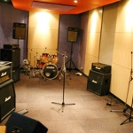 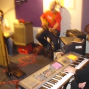
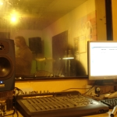
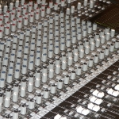
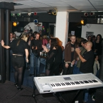
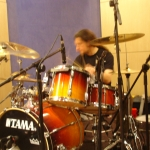
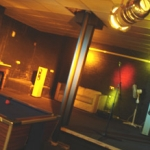
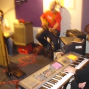
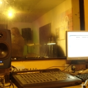
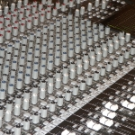
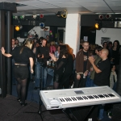
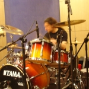
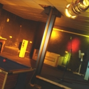